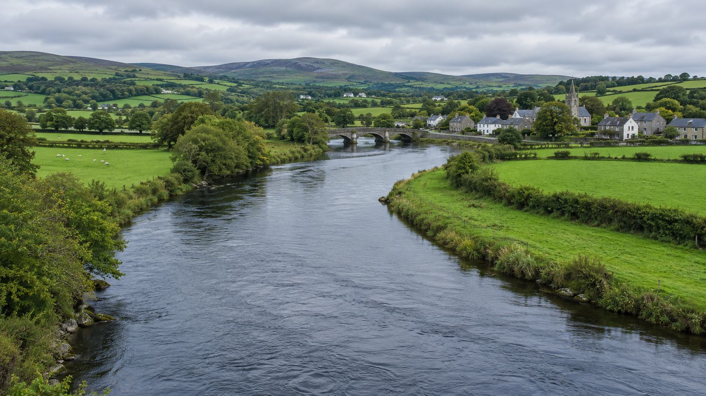

Ask River Watch
AI can make mistakes. The Duty Officer makes and records the final decision by 16:00.
Data and Groq settings
Browser mode saves the key on this browser only. Use Forget key on a shared computer.
Irish flood response dashboard
Review river conditions and response recommendations for eight Irish towns.

AI can make mistakes. The Duty Officer makes and records the final decision by 16:00.
Browser mode saves the key on this browser only. Use Forget key on a shared computer.